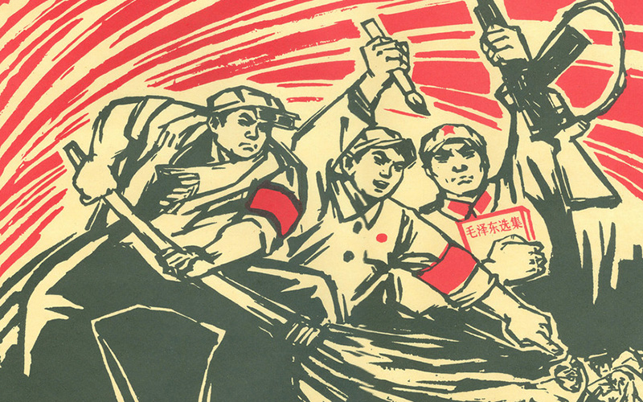
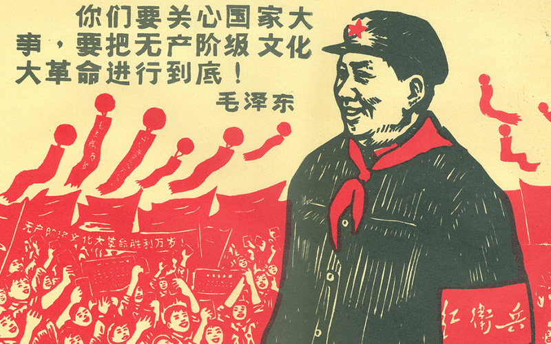
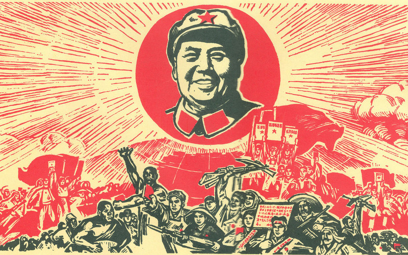

-
[地方历史] 辛亥革命前后烟台市的社会状况 2017-10-27
“好风凭借力，送我上青云”。今年以来，中卫市针对“引才难、留才难”的突出问题，转变思路，开阔视野，念好“借字经”，巧借外力招才育才，助推产业转型发展。
-
[地方历史] 中共烟台地方组织的创建 2017-10-27
开幕式上，县人大副主任、总工会主席*月琴致开幕词，她指出，非公企业技能人才是我县职工人才队伍的重要组成部分，是各行各业产业大军的优秀代表，是技术工人队伍的核心骨干。
-
[红色文物] 海阳84岁老兵*兰斌将许世友所送京胡捐赠给纪念馆 2017-10-27
6月30日上午，在海阳市凤城街道建设村，一个特殊的捐赠仪式正在进行。捐赠人是84岁高龄的*兰斌老人，他将自己珍藏了60多年的京胡捐赠给了许世友将军在胶东纪念馆，而这把京胡正是许世友将军当年赠送给老人的
-
[红色记忆] 雷神庙战斗打响胶东抗战**枪 激战八小时击退日军 2017-10-27
近年来，我市把加强领导干部因私出国（境）管理作为强化干部日常监督的重要内容，通过从严抓实登记备案、证照管理、审核把关，全市领导干部因私出国（境）监督管理实现了规范化、制度化。
-
[红色记忆] 东海独立团拔掉日军在牟平设立的十四个据点 2017-10-27
近年来，中卫市积极探索干部监督新途径，建立健全《领导干部实绩公示制度》，通过个人报绩、领导审绩、公示亮绩、群众评绩、组织用绩，切实加强领导干部履职尽责监督管理。

打造地方红色文化新高地
保护红色资源 · 传承红色文化 · 弘扬革命传统